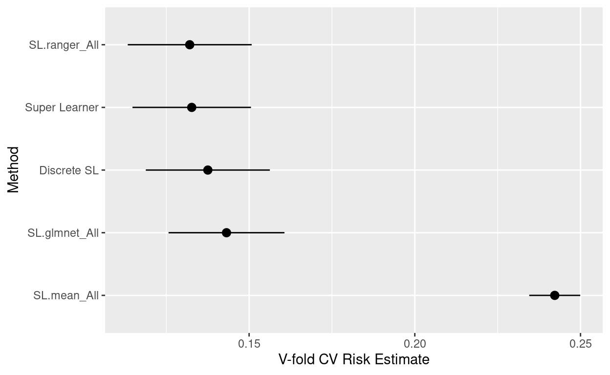
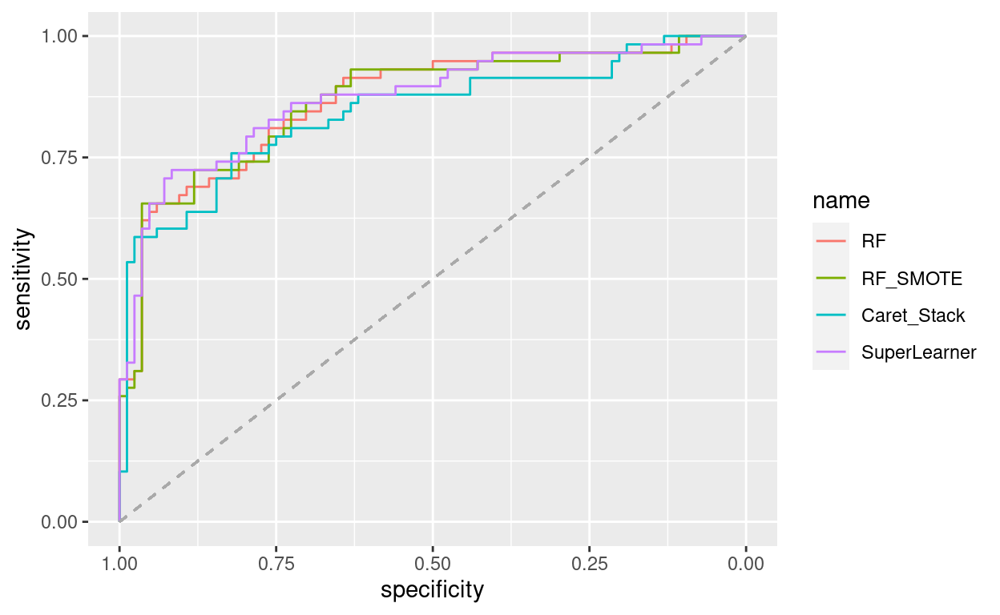

library(tidyverse)
library(magrittr)
library(titanic)
library(caret)
library(DMwR)
library(ranger)
library(party)
library(caretEnsemble)
library(SuperLearner)
library(pROC)In this notebook we use the Titanic data. It includes information on a set of Titanic passengers, such as age, sex, ticket class and whether he or she survived the Titanic tragedy (Note that the titanic package also provides a separate test set that precludes the survival variable).
Source: https://www.kaggle.com/c/titanic/data
titanic <- titanic_train
str(titanic)## 'data.frame': 891 obs. of 12 variables:
## $ PassengerId: int 1 2 3 4 5 6 7 8 9 10 ...
## $ Survived : int 0 1 1 1 0 0 0 0 1 1 ...
## $ Pclass : int 3 1 3 1 3 3 1 3 3 2 ...
## $ Name : chr "Braund, Mr. Owen Harris" "Cumings, Mrs. John Bradley (Florence Briggs Thayer)" "Heikkinen, Miss. Laina" "Futrelle, Mrs. Jacques Heath (Lily May Peel)" ...
## $ Sex : chr "male" "female" "female" "female" ...
## $ Age : num 22 38 26 35 35 NA 54 2 27 14 ...
## $ SibSp : int 1 1 0 1 0 0 0 3 0 1 ...
## $ Parch : int 0 0 0 0 0 0 0 1 2 0 ...
## $ Ticket : chr "A/5 21171" "PC 17599" "STON/O2. 3101282" "113803" ...
## $ Fare : num 7.25 71.28 7.92 53.1 8.05 ...
## $ Cabin : chr "" "C85" "" "C123" ...
## $ Embarked : chr "S" "C" "S" "S" ...We begin with some minor data preparations.
titanic$Survived <- as.factor(titanic$Survived)
levels(titanic$Survived) <- make.names(levels(factor(titanic$Survived)))
titanic %<>%
select(Survived, Pclass, Sex, Age, Fare) %>%
na.omit(.)Next we split the data into a training and a test part. This can be done by stratified random sampling with createDataPartition().
set.seed(3225)
inTrain <- createDataPartition(titanic$Survived,
p = .8,
list = FALSE,
times = 1)
titanic_train <- titanic[inTrain,]
titanic_test <- titanic[-inTrain,]In this notebook, we will consider another add-on in the tuning process. We use stratified cross-validation since we have imbalanced classes in our outcome. We therefore set up a cv-index using createFolds().
cvIndex <- createFolds(titanic_train$Survived, 5, returnTrain = T)The cvIndex object can now be passed on to trainControl() to guide the tuning process in the next sections.
ctrl <- trainControl(method = "cv",
number = 5,
index = cvIndex,
summaryFunction = twoClassSummary,
classProbs = TRUE,
verboseIter = TRUE,
savePredictions = "final")We start with random forests and extremely randomized trees. In order to specify reasonable values for mtry, model.matrix() is a handy function as it creates dummy variables for all factors of a specified model.
cols <- ncol(model.matrix(Survived ~ ., data = titanic_train))Here we only consider two try-out values to limit the time needed for model tuning. We specify the tree building methods via splitrule.
grid <- expand.grid(mtry = c(sqrt(cols), log(cols)),
splitrule = c("gini", "extratrees"),
min.node.size = 10)
gridStart the tuning process. We are looking for the model with the maximum ROC-AUC.
rf <- train(Survived ~ .,
data = titanic_train,
method = "ranger",
trControl = ctrl,
tuneGrid = grid,
metric = "ROC")## + Fold1: mtry=2.236, splitrule=gini, min.node.size=10
## - Fold1: mtry=2.236, splitrule=gini, min.node.size=10
## + Fold1: mtry=1.609, splitrule=gini, min.node.size=10
## - Fold1: mtry=1.609, splitrule=gini, min.node.size=10
## + Fold1: mtry=2.236, splitrule=extratrees, min.node.size=10
## - Fold1: mtry=2.236, splitrule=extratrees, min.node.size=10
## + Fold1: mtry=1.609, splitrule=extratrees, min.node.size=10
## - Fold1: mtry=1.609, splitrule=extratrees, min.node.size=10
## + Fold2: mtry=2.236, splitrule=gini, min.node.size=10
## - Fold2: mtry=2.236, splitrule=gini, min.node.size=10
## + Fold2: mtry=1.609, splitrule=gini, min.node.size=10
## - Fold2: mtry=1.609, splitrule=gini, min.node.size=10
## + Fold2: mtry=2.236, splitrule=extratrees, min.node.size=10
## - Fold2: mtry=2.236, splitrule=extratrees, min.node.size=10
## + Fold2: mtry=1.609, splitrule=extratrees, min.node.size=10
## - Fold2: mtry=1.609, splitrule=extratrees, min.node.size=10
## + Fold3: mtry=2.236, splitrule=gini, min.node.size=10
## - Fold3: mtry=2.236, splitrule=gini, min.node.size=10
## + Fold3: mtry=1.609, splitrule=gini, min.node.size=10
## - Fold3: mtry=1.609, splitrule=gini, min.node.size=10
## + Fold3: mtry=2.236, splitrule=extratrees, min.node.size=10
## - Fold3: mtry=2.236, splitrule=extratrees, min.node.size=10
## + Fold3: mtry=1.609, splitrule=extratrees, min.node.size=10
## - Fold3: mtry=1.609, splitrule=extratrees, min.node.size=10
## + Fold4: mtry=2.236, splitrule=gini, min.node.size=10
## - Fold4: mtry=2.236, splitrule=gini, min.node.size=10
## + Fold4: mtry=1.609, splitrule=gini, min.node.size=10
## - Fold4: mtry=1.609, splitrule=gini, min.node.size=10
## + Fold4: mtry=2.236, splitrule=extratrees, min.node.size=10
## - Fold4: mtry=2.236, splitrule=extratrees, min.node.size=10
## + Fold4: mtry=1.609, splitrule=extratrees, min.node.size=10
## - Fold4: mtry=1.609, splitrule=extratrees, min.node.size=10
## + Fold5: mtry=2.236, splitrule=gini, min.node.size=10
## - Fold5: mtry=2.236, splitrule=gini, min.node.size=10
## + Fold5: mtry=1.609, splitrule=gini, min.node.size=10
## - Fold5: mtry=1.609, splitrule=gini, min.node.size=10
## + Fold5: mtry=2.236, splitrule=extratrees, min.node.size=10
## - Fold5: mtry=2.236, splitrule=extratrees, min.node.size=10
## + Fold5: mtry=1.609, splitrule=extratrees, min.node.size=10
## - Fold5: mtry=1.609, splitrule=extratrees, min.node.size=10
## Aggregating results
## Selecting tuning parameters
## Fitting mtry = 2.24, splitrule = extratrees, min.node.size = 10 on full training setList the tuning results.
rf## Random Forest
##
## 572 samples
## 4 predictor
## 2 classes: 'X0', 'X1'
##
## No pre-processing
## Resampling: Cross-Validated (5 fold)
## Summary of sample sizes: 457, 458, 458, 458, 457
## Resampling results across tuning parameters:
##
## mtry splitrule ROC Sens Spec
## 1.609438 gini 0.8645549 0.8941176 0.6504163
## 1.609438 extratrees 0.8659085 0.8911765 0.6850139
## 2.236068 gini 0.8708222 0.8911765 0.7065680
## 2.236068 extratrees 0.8713575 0.8970588 0.6978723
##
## Tuning parameter 'min.node.size' was held constant at a value of 10
## ROC was used to select the optimal model using the largest value.
## The final values used for the model were mtry = 2.236068, splitrule
## = extratrees and min.node.size = 10.In this section we investigate whether up-sampling the minority class helps to train better prediction models. One option is using SMOTE() from the DMwR package.
?SMOTEHowever, here we use caret as a wrapper for this function and directly specify SMOTE in the sampling argument of trainControl().
ctrl2 <- trainControl(method = "cv",
number = 5,
summaryFunction = twoClassSummary,
classProbs = TRUE,
verboseIter = TRUE,
sampling = "smote")Lets again train and tune random forests and extremely randomized trees, this time with modified training data.
rf_s <- train(Survived ~ .,
data = titanic_train,
method = "ranger",
trControl = ctrl2,
tuneGrid = grid,
metric = "ROC")## + Fold1: mtry=2.236, splitrule=gini, min.node.size=10
## - Fold1: mtry=2.236, splitrule=gini, min.node.size=10
## + Fold1: mtry=1.609, splitrule=gini, min.node.size=10
## - Fold1: mtry=1.609, splitrule=gini, min.node.size=10
## + Fold1: mtry=2.236, splitrule=extratrees, min.node.size=10
## - Fold1: mtry=2.236, splitrule=extratrees, min.node.size=10
## + Fold1: mtry=1.609, splitrule=extratrees, min.node.size=10
## - Fold1: mtry=1.609, splitrule=extratrees, min.node.size=10
## + Fold2: mtry=2.236, splitrule=gini, min.node.size=10
## - Fold2: mtry=2.236, splitrule=gini, min.node.size=10
## + Fold2: mtry=1.609, splitrule=gini, min.node.size=10
## - Fold2: mtry=1.609, splitrule=gini, min.node.size=10
## + Fold2: mtry=2.236, splitrule=extratrees, min.node.size=10
## - Fold2: mtry=2.236, splitrule=extratrees, min.node.size=10
## + Fold2: mtry=1.609, splitrule=extratrees, min.node.size=10
## - Fold2: mtry=1.609, splitrule=extratrees, min.node.size=10
## + Fold3: mtry=2.236, splitrule=gini, min.node.size=10
## - Fold3: mtry=2.236, splitrule=gini, min.node.size=10
## + Fold3: mtry=1.609, splitrule=gini, min.node.size=10
## - Fold3: mtry=1.609, splitrule=gini, min.node.size=10
## + Fold3: mtry=2.236, splitrule=extratrees, min.node.size=10
## - Fold3: mtry=2.236, splitrule=extratrees, min.node.size=10
## + Fold3: mtry=1.609, splitrule=extratrees, min.node.size=10
## - Fold3: mtry=1.609, splitrule=extratrees, min.node.size=10
## + Fold4: mtry=2.236, splitrule=gini, min.node.size=10
## - Fold4: mtry=2.236, splitrule=gini, min.node.size=10
## + Fold4: mtry=1.609, splitrule=gini, min.node.size=10
## - Fold4: mtry=1.609, splitrule=gini, min.node.size=10
## + Fold4: mtry=2.236, splitrule=extratrees, min.node.size=10
## - Fold4: mtry=2.236, splitrule=extratrees, min.node.size=10
## + Fold4: mtry=1.609, splitrule=extratrees, min.node.size=10
## - Fold4: mtry=1.609, splitrule=extratrees, min.node.size=10
## + Fold5: mtry=2.236, splitrule=gini, min.node.size=10
## - Fold5: mtry=2.236, splitrule=gini, min.node.size=10
## + Fold5: mtry=1.609, splitrule=gini, min.node.size=10
## - Fold5: mtry=1.609, splitrule=gini, min.node.size=10
## + Fold5: mtry=2.236, splitrule=extratrees, min.node.size=10
## - Fold5: mtry=2.236, splitrule=extratrees, min.node.size=10
## + Fold5: mtry=1.609, splitrule=extratrees, min.node.size=10
## - Fold5: mtry=1.609, splitrule=extratrees, min.node.size=10
## Aggregating results
## Selecting tuning parameters
## Fitting mtry = 2.24, splitrule = extratrees, min.node.size = 10 on full training setPrint the tuning results.
rf_s## Random Forest
##
## 572 samples
## 4 predictor
## 2 classes: 'X0', 'X1'
##
## No pre-processing
## Resampling: Cross-Validated (5 fold)
## Summary of sample sizes: 458, 457, 458, 458, 457
## Addtional sampling using SMOTE
##
## Resampling results across tuning parameters:
##
## mtry splitrule ROC Sens Spec
## 1.609438 gini 0.8594146 0.8617647 0.7417206
## 1.609438 extratrees 0.8540275 0.8823529 0.7069380
## 2.236068 gini 0.8596704 0.8617647 0.7328400
## 2.236068 extratrees 0.8662384 0.8705882 0.7284921
##
## Tuning parameter 'min.node.size' was held constant at a value of 10
## ROC was used to select the optimal model using the largest value.
## The final values used for the model were mtry = 2.236068, splitrule
## = extratrees and min.node.size = 10.We may also want to consider a meta-model that is built on top of the predictions of lower level models. Here we consider the caretEnsemble package. For simplicity, we only use CTREE and a logistic regression as base methods. As a first step, the lower level models have to be build.
model_list <- caretList(Survived ~ .,
data = titanic_train,
trControl = ctrl,
metric = "ROC",
methodList = c("ctree", "glm"))## + Fold1: mincriterion=0.99
## - Fold1: mincriterion=0.99
## + Fold1: mincriterion=0.50
## - Fold1: mincriterion=0.50
## + Fold1: mincriterion=0.01
## - Fold1: mincriterion=0.01
## + Fold2: mincriterion=0.99
## - Fold2: mincriterion=0.99
## + Fold2: mincriterion=0.50
## - Fold2: mincriterion=0.50
## + Fold2: mincriterion=0.01
## - Fold2: mincriterion=0.01
## + Fold3: mincriterion=0.99
## - Fold3: mincriterion=0.99
## + Fold3: mincriterion=0.50
## - Fold3: mincriterion=0.50
## + Fold3: mincriterion=0.01
## - Fold3: mincriterion=0.01
## + Fold4: mincriterion=0.99
## - Fold4: mincriterion=0.99
## + Fold4: mincriterion=0.50
## - Fold4: mincriterion=0.50
## + Fold4: mincriterion=0.01
## - Fold4: mincriterion=0.01
## + Fold5: mincriterion=0.99
## - Fold5: mincriterion=0.99
## + Fold5: mincriterion=0.50
## - Fold5: mincriterion=0.50
## + Fold5: mincriterion=0.01
## - Fold5: mincriterion=0.01
## Aggregating results
## Selecting tuning parameters
## Fitting mincriterion = 0.5 on full training set
## + Fold1: parameter=none
## - Fold1: parameter=none
## + Fold2: parameter=none
## - Fold2: parameter=none
## + Fold3: parameter=none
## - Fold3: parameter=none
## + Fold4: parameter=none
## - Fold4: parameter=none
## + Fold5: parameter=none
## - Fold5: parameter=none
## Aggregating results
## Fitting final model on full training setThe resulting object includes the training and tuning results for both methods.
model_list## $ctree
## Conditional Inference Tree
##
## 572 samples
## 4 predictor
## 2 classes: 'X0', 'X1'
##
## No pre-processing
## Resampling: Cross-Validated (5 fold)
## Summary of sample sizes: 457, 458, 458, 458, 457
## Resampling results across tuning parameters:
##
## mincriterion ROC Sens Spec
## 0.01 0.8394889 0.8911765 0.6632747
## 0.50 0.8439544 0.8970588 0.6545791
## 0.99 0.8360852 0.9352941 0.5727105
##
## ROC was used to select the optimal model using the largest value.
## The final value used for the model was mincriterion = 0.5.
##
## $glm
## Generalized Linear Model
##
## 572 samples
## 4 predictor
## 2 classes: 'X0', 'X1'
##
## No pre-processing
## Resampling: Cross-Validated (5 fold)
## Summary of sample sizes: 457, 458, 458, 458, 457
## Resampling results:
##
## ROC Sens Spec
## 0.854139 0.8529412 0.7236818
##
##
## attr(,"class")
## [1] "caretList"We can briefly check the similarity of the predictions across models.
as.data.frame(predict(model_list, newdata = head(titanic_train)))modelCor(resamples(model_list))## ctree glm
## ctree 1.00000 0.96793
## glm 0.96793 1.00000Now we build a higher level model by using the predictions of the previous models as inputs in a logistic regression. This can be implemented with caretStack().
glm_ensemble <- caretStack(model_list,
method = "glm",
trControl = trainControl(
method = "cv",
number = 5,
savePredictions = "final",
classProbs = TRUE,
summaryFunction = twoClassSummary))## Warning in train.default(predobs$preds, predobs$obs, ...): The metric "Accuracy"
## was not in the result set. ROC will be used instead.List the cross-validation results of the stacking ensemble.
glm_ensemble## A glm ensemble of 2 base models: ctree, glm
##
## Ensemble results:
## Generalized Linear Model
##
## 572 samples
## 2 predictor
## 2 classes: 'X0', 'X1'
##
## No pre-processing
## Resampling: Cross-Validated (5 fold)
## Summary of sample sizes: 458, 458, 458, 457, 457
## Resampling results:
##
## ROC Sens Spec
## 0.8525507 0.8764706 0.706568We can also access the coefficients of the meta logit model via coef.
coef(glm_ensemble$ens_model$finalModel)## (Intercept) ctree glm
## 2.653925 -2.269761 -2.988444As an alternative to caretEnsemble, the SuperLearner package can be used for building a meta-ensemble model. This package needs a slightly different data setup, i.e. X and y objects for the train and test data.
X_train <- titanic_train[which(names(titanic_train) != "Survived")]
y_train <- ifelse(titanic_train$Survived == "X1", 1, 0)
X_test <- titanic_test[which(names(titanic_test) != "Survived")]The function listWrappers() lists the model types that we can use as individual learners.
listWrappers()## All prediction algorithm wrappers in SuperLearner:## [1] "SL.bartMachine" "SL.bayesglm" "SL.biglasso"
## [4] "SL.caret" "SL.caret.rpart" "SL.cforest"
## [7] "SL.earth" "SL.extraTrees" "SL.gam"
## [10] "SL.gbm" "SL.glm" "SL.glm.interaction"
## [13] "SL.glmnet" "SL.ipredbagg" "SL.kernelKnn"
## [16] "SL.knn" "SL.ksvm" "SL.lda"
## [19] "SL.leekasso" "SL.lm" "SL.loess"
## [22] "SL.logreg" "SL.mean" "SL.nnet"
## [25] "SL.nnls" "SL.polymars" "SL.qda"
## [28] "SL.randomForest" "SL.ranger" "SL.ridge"
## [31] "SL.rpart" "SL.rpartPrune" "SL.speedglm"
## [34] "SL.speedlm" "SL.step" "SL.step.forward"
## [37] "SL.step.interaction" "SL.stepAIC" "SL.svm"
## [40] "SL.template" "SL.xgboost"##
## All screening algorithm wrappers in SuperLearner:## [1] "All"
## [1] "screen.corP" "screen.corRank" "screen.glmnet"
## [4] "screen.randomForest" "screen.SIS" "screen.template"
## [7] "screen.ttest" "write.screen.template"Here we choose a null model (SL.mean), elastic net (SL.glmnet) and random forests grown by ranger (SL.ranger) for building our Super Learner. Details on the construction of the higher level model can be found by calling ?method.template.
sl <- SuperLearner(Y = y_train, X = X_train, family = binomial(),
SL.library = c("SL.mean", "SL.glmnet", "SL.ranger"))## Loading required namespace: glmnetsl##
## Call:
## SuperLearner(Y = y_train, X = X_train, family = binomial(), SL.library = c("SL.mean",
## "SL.glmnet", "SL.ranger"))
##
##
## Risk Coef
## SL.mean_All 0.2420988 0.0000000
## SL.glmnet_All 0.1434415 0.2010132
## SL.ranger_All 0.1303666 0.7989868We can also run nested Cross-Validation to get CV estimates for the performance of the individual models and the Super Learner.
cv_sl <- CV.SuperLearner(Y = y_train, X = X_train, family = binomial(), V = 5,
SL.library = c("SL.mean", "SL.glmnet", "SL.ranger"))
cv_sl##
## Call:
## CV.SuperLearner(Y = y_train, X = X_train, V = 5, family = binomial(), SL.library = c("SL.mean",
## "SL.glmnet", "SL.ranger"))
##
##
## Cross-validated predictions from the SuperLearner: SL.predict
##
## Cross-validated predictions from the discrete super learner (cross-validation selector): discreteSL.predict
##
## Which library algorithm was the discrete super learner: whichDiscreteSL
##
## Cross-validated prediction for all algorithms in the library: library.predictsummary(cv_sl)##
## Call:
## CV.SuperLearner(Y = y_train, X = X_train, V = 5, family = binomial(), SL.library = c("SL.mean",
## "SL.glmnet", "SL.ranger"))
##
## Risk is based on: Mean Squared Error
##
## All risk estimates are based on V = 5
##
## Algorithm Ave se Min Max
## Super Learner 0.13268 0.0091214 0.11896 0.15390
## Discrete SL 0.13754 0.0095505 0.11883 0.15364
## SL.mean_All 0.24222 0.0039240 0.22946 0.24905
## SL.glmnet_All 0.14318 0.0089212 0.13124 0.16968
## SL.ranger_All 0.13207 0.0095405 0.11028 0.15364Plot the nested CV results.
plot(cv_sl)
Finally, we create predicted risk scores for our outcome in the test set.
p_rf <- predict(rf, newdata = titanic_test, type = "prob")
p_rf_s <- predict(rf_s, newdata = titanic_test, type = "prob")
p_ens <- predict(glm_ensemble, newdata = titanic_test, type = "prob")
p_sl <- predict(sl, X_test, onlySL = TRUE)Creating ROC objects based on predicted probabilities…
rf_roc <- roc(titanic_test$Survived, p_rf$X1)## Setting levels: control = X0, case = X1## Setting direction: controls < casesrf_s_roc <- roc(titanic_test$Survived, p_rf_s$X1)## Setting levels: control = X0, case = X1
## Setting direction: controls < casesens_roc <- roc(titanic_test$Survived, p_ens)## Setting levels: control = X0, case = X1## Setting direction: controls > casessl_roc <- roc(titanic_test$Survived, p_sl$pred[, 1])## Setting levels: control = X0, case = X1## Setting direction: controls < cases…and plotting the ROC curves.
ggroc(list(RF = rf_roc,
RF_SMOTE = rf_s_roc,
Caret_Stack = ens_roc,
SuperLearner = sl_roc)) +
geom_segment(aes(x = 1, xend = 0, y = 0, yend = 1),
color="darkgrey", linetype="dashed")